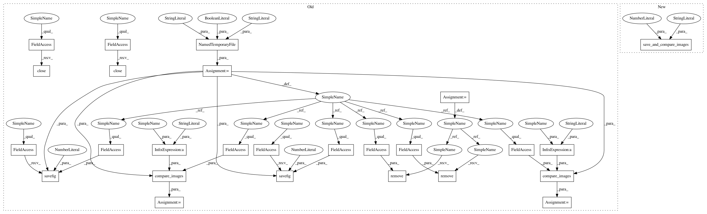

cdc6a9b4491b48d9136992c4604792f0057c8bc2,scanpy/tests/plotting.py,,test_dotplot,#,51
Before Change
def test_dotplot():
adata = sc.datasets.krumsiek11()
outfile = NamedTemporaryFile(suffix=".png", prefix="scanpy_test_dotplot_", delete=False)
sc.pl.dotplot(adata, adata.var_names, "cell_type", use_raw=False, show=False)
pl.savefig(outfile.name, dpi=80)
pl.close()
tolerance = 15
res = compare_images(ROOT + "/master_dotplot.png", outfile.name, tolerance)
assert res is None, res
os.remove(outfile.name)
// test dotplot numeric column():
adata.obs["Gata2"] = adata.X[:, 0]
sc.pl.dotplot(adata, adata.var_names, "Gata2", use_raw=False,
num_categories=7, figsize=(7, 2.5), show=False)
pl.savefig(outfile.name, dpi=80)
pl.close()
res = compare_images(ROOT + "/master_dotplot2.png", outfile.name, tolerance)
assert res is None, res
os.remove(outfile.name)
def test_matrixplot():
adata = sc.datasets.krumsiek11()
After Change
def test_dotplot():
adata = sc.datasets.krumsiek11()
sc.pl.dotplot(adata, adata.var_names, "cell_type", use_raw=False, show=False)
save_and_compare_images("master_dotplot", tolerance=15)
// test dotplot numeric column():
adata.obs["Gata2"] = adata.X[:, 0]
sc.pl.dotplot(adata, adata.var_names, "Gata2", use_raw=False,
In pattern: SUPERPATTERN
Frequency: 3
Non-data size: 26
Instances
Project Name: theislab/scanpy
Commit Name: cdc6a9b4491b48d9136992c4604792f0057c8bc2
Time: 2018-10-09
Author: fidel.ramirez@gmail.com
File Name: scanpy/tests/plotting.py
Class Name:
Method Name: test_dotplot
Project Name: theislab/scanpy
Commit Name: cdc6a9b4491b48d9136992c4604792f0057c8bc2
Time: 2018-10-09
Author: fidel.ramirez@gmail.com
File Name: scanpy/tests/plotting.py
Class Name:
Method Name: test_matrixplot
Project Name: theislab/scanpy
Commit Name: cdc6a9b4491b48d9136992c4604792f0057c8bc2
Time: 2018-10-09
Author: fidel.ramirez@gmail.com
File Name: scanpy/tests/plotting.py
Class Name:
Method Name: test_stacked_violin